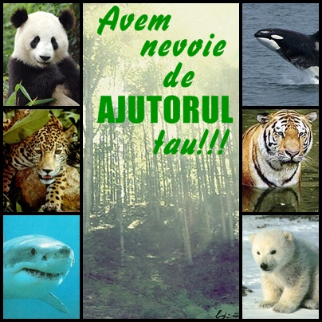
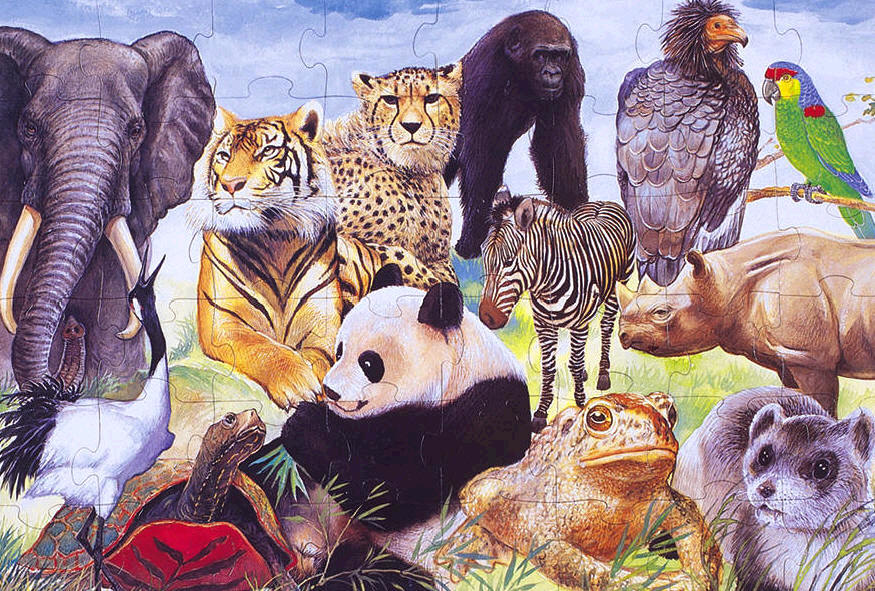
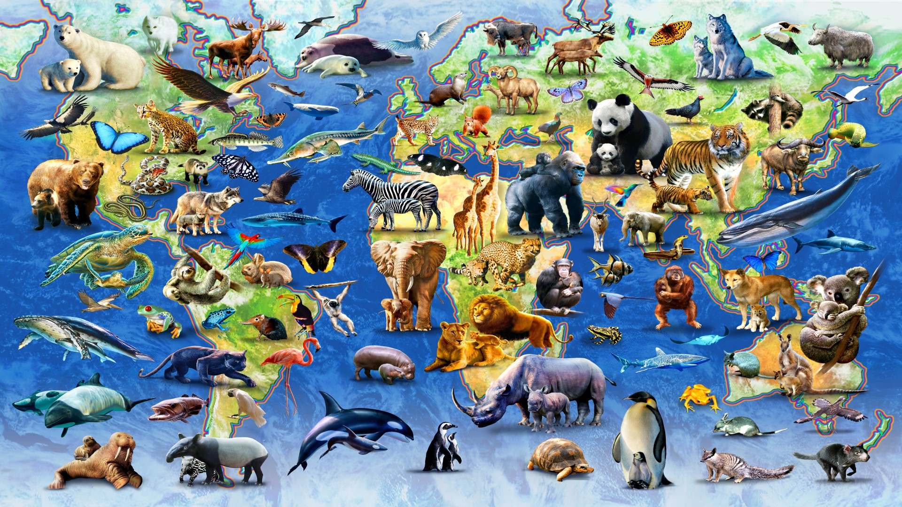

Peste 5.000 de specii de animale de pe Glob sunt clasificate ca fiind pe cale de disparitie. Alte câteva mii de specii ajung în pragul disparitiei în fiecare an înainte ca biologii sa le poata identifica.
Principalele cauze ale disparitiei speciilor de animale sunt: distrugerea habitatelor, exploatarea comerciala ( vânatul irational si braconajul), distrugerile produse de catre speciile aclimatizate si poluarea. Dintre aceste cauze, distrugerea habitatelor reprezinta cea mai mare amenintare pentru aceste specii.
De-a lungul erelor geologice, diferitele specii de plante si animale au evoluat încet si au disparut din cauza schimbarilor climatice radicale si a imposibilitatii de a se adapta competitiei pentru supravietuire. Totusi, din anii 1600, rata de disparitie a crescut progresiv, odata cu cresterea populatiei umane si consumarea resurselor naturale.
Multi oameni de stiinta considera ca de la disparitia dinozaurilor, în urma cu 65 de milioane de ani, astazi ne aflam în mijlocul celei mai mari perioade critice, de distrugere ireversibila a numeroase specii de plante si animale. Mentinerea ecosistemelor actuale, precum padurile, recifurile de corali sau mlastinile, depinde în mare masura de biodiversitatea lor. Disparitia uneia dintre speciile care alcatuiesc un astfel de lant trofic poate duce la declinul ecosistemului respectiv.
Scăderea ireversibila a biodiversitatii are un impact serios asupra nivelului de trai al oamenilor. Ecosistemele sanatoase asigura hrana, aer curat, apa si soluri fertile pentru agricultura. De asemenea, 40% din medicamentele moderne provin de la plante si animale.
Cauzele dispariției speciilor sunt diverse:Distrugerea habitatelor
Planeta noastra se afla intr-o continua schimbare, habitatele se modifica si sunt influentate continuu. Schimbarile naturale au loc treptat, iar impactul lor asupra speciilor este minim, lasand animalelor timp suficient pentru adaptare.
Cand schimbarile au loc intr-un ritm rapid, speciile au prea putin timp sau chiar deloc sa reactioneze sau sa se adapteze noilor circumstante. Acest lucru poate duce la efecte dezastruoase, pierderile rapide de habitat fiind principala cauza a disparitiei speciilor.
Forta cea mai puternica ce influenteaza pierderea habitatelor o reprezinta oamenii. Mai ales in ultimul secol, aproape toate regiunile de pe Glob au fost afectate de actiunea umana. Spre exemplu, pierderea nutrientilor din sol, care sustin padurile tropicale, extinctia pestilor si a altor specii acvatice din habitatele poluate, schimbarile climei la nivel global, eliberarea gazelor cu efect de sera sunt provocate preponderent de oameni.
Distrugerea habitatelor de catre activitatile umane este cauza primara a disparitiei unor specii de plante si animale. Pe masura ce vietuitoarele evolueaza, ele se adapteaza unor habitate specifice, care le asigura conditiile optime de viata de care au nevoie. Poluarea, drenarea mlastinilor, defrisarea padurilor, urbanizarea si constructia de drumuri (Transamazonianul, Transsiberianul) duc la distrugerea sau fragmentarea acestor medii de viata. Astfel, speciile pierd contactul cu celelalte populatii, reducandu-se astfel diversitatea genetica si adaptandu-se mai greu la conditiile climatice schimbatoare. In unele cazuri, habitatul fragmentat devine o zona prea restransa pentru a suporta o populatie mare.
Introducerea speciilor exoticeSpeciile native sunt acelea care fac parte dintr-un anumit peisaj geografic, pe o perioada indelungata de timp. Sunt adaptate foarte bine mediului lor, precum si la celelalte specii native din acelasi habitat. Pe de alta parte, speciile exotice sunt introduse in ecosistem de catre activitatea umana, intentionat sau nu. Acestea sunt vazute de speciile native ca straini si pot cauza conflicte in cadrul ecosistemului – pot distruge balanta ecologica sensibila si pot produce o supra-abundenta de consecinte negative.
Una dintre cele mai grave consecinte rezulta cand speciile exotice incep sa se hraneasca cu cele native sau cand concureaza cu acestea pentru acelasi tip de hrana. Cele mai distructive efecte au avut loc pe insule: introducerea insectelor, soarecilor, porcilor sau altor vietati au dus la disparitia a sute de specii, in ultimele cinci secole.
SupraexploatareaIn ultimii 400 de ani, exploatarea comerciala mondiala a animalelor pentru hrana si alte produse a crescut simtitor. Multe specii de balene au ajuns in pragul disparitiei dupa ce au fost pur si simplu macelarite pentru ulei si carne. Un alt exemplu concludent este rinocerul negru african, ucis pe scara larga pentru cornul sau, care este pretuit ca medicament si afrodisiac. De asemenea, familii intregi de cactusi si orhidee sunt amenintate cu disparitia din cauza culegerii lor irationale.
Vanatul nerestrictionat al balenelor, in timpul secolului XX, este un exemplu de supraexploatare. Aceasta industrie a dus la reducerea populatiilor diferitelor specii de balene la numere foarte scazute. Cand mai multe specii erau aproape pe cale de disparitie, unele state au agreat un acord international cu privire la vanatul balenelor. Datorita acestuia, cateva specii, printre care si balena-cenusie, si-au revenit in mod remarcabil, in schimb altele nu au inregistrat modificari privitoare la numarul populatiei. Un alt exemplu il constituie vanatul anumitor animale pentru componente pretioase, precum cornul de rinocer sau oasele de tigru. Multe animale au scazut simtitor ca numar de indivizi, in anumite regiuni de pe Glob.
Alti factori
Speciile aclimatizate introduse unui nou ecosistem au cauzat, de multe ori, declinul speciilor native. In 1959, colonistii britanici au introdus bibanul de Nil in lacul Victoria in Africa de Est. Acest peste de prada a redus drastic populatiile native de pesti si a cauzat disparitia a nu mai putin de 200 de specii endemice, care se hraneau cu alge. Astfel, vegetatia acvatica din lacul Victoria a crescut extrem de mult si echilibrul natural a fost dereglat, ireversibil pana in ziua de astazi.